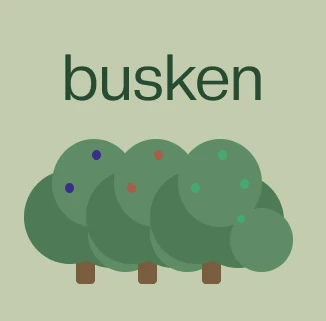
Ryddeaksjoner,
gjort enkelt.
En app som gjør det enkelt å finne, melde seg på og arrangere ryddeaksjoner i nærområdet.
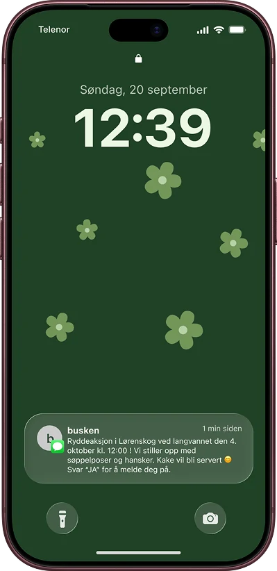
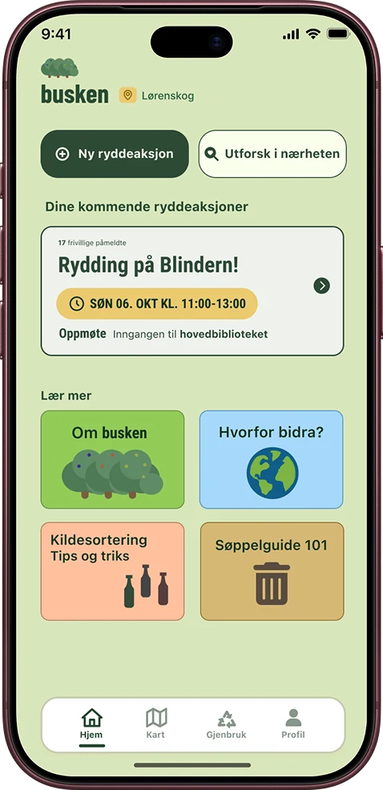
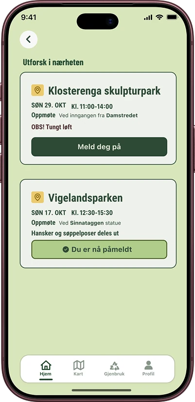
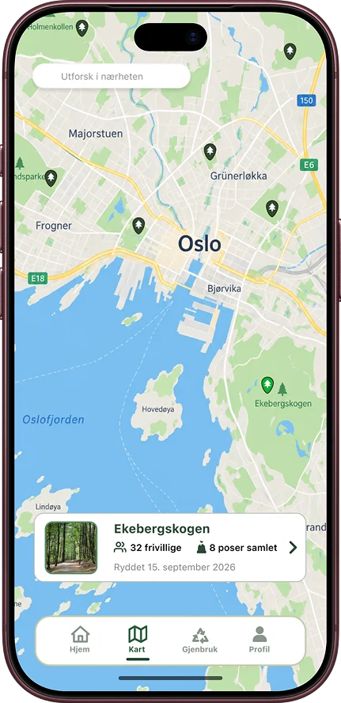
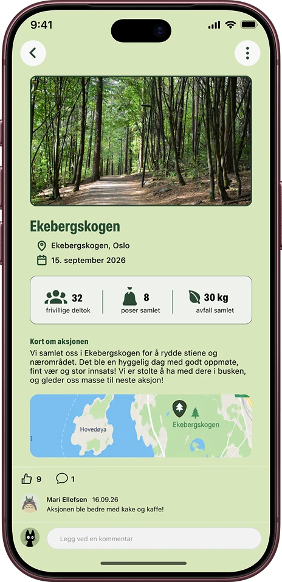
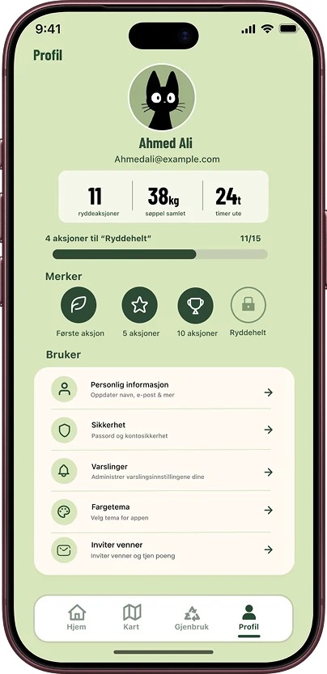
Busken samler ryddeaksjoner, påmelding og gjenbruk på ett sted.
Caset kom fra BEKK UX Cup, der team PHO endte på 5. plass. Vi var fornøyde med konseptet, og valgte å jobbe videre med wireframes for hele appen etter konkurransen.
Rolle, team & leveranse
Interaksjonsdesigner.
Innsikt, konsept og wireframes.
Team PHO: 3 designere.
Mikka, Jenny og Radwa.
Konsept i BEKK UX Cup.
Wireframes i Figma, 14 skjermer.
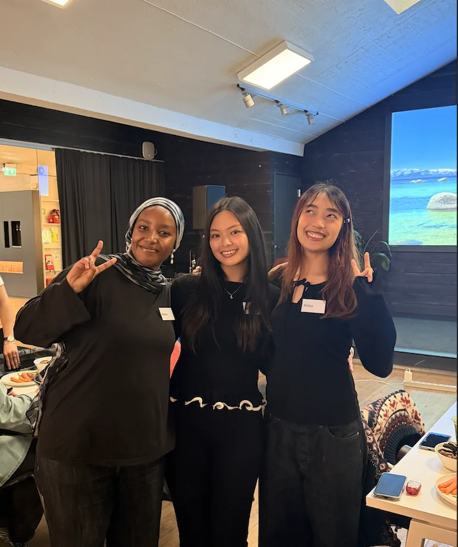
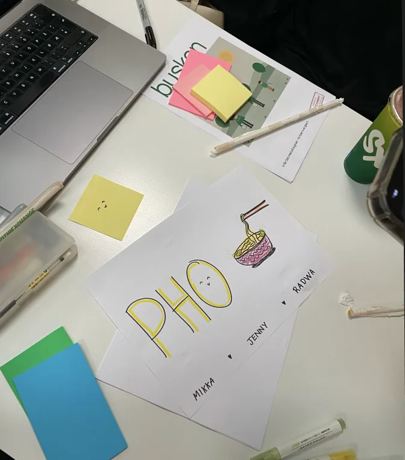
Designprosessen
Fra én konkurransedag til en gjennomarbeidet wireframe, bygget på to brukerprofiler.
-
Caset
BEKK UX Cup: hvordan få flere til å bidra i ryddeaksjoner i nærområdet?
-
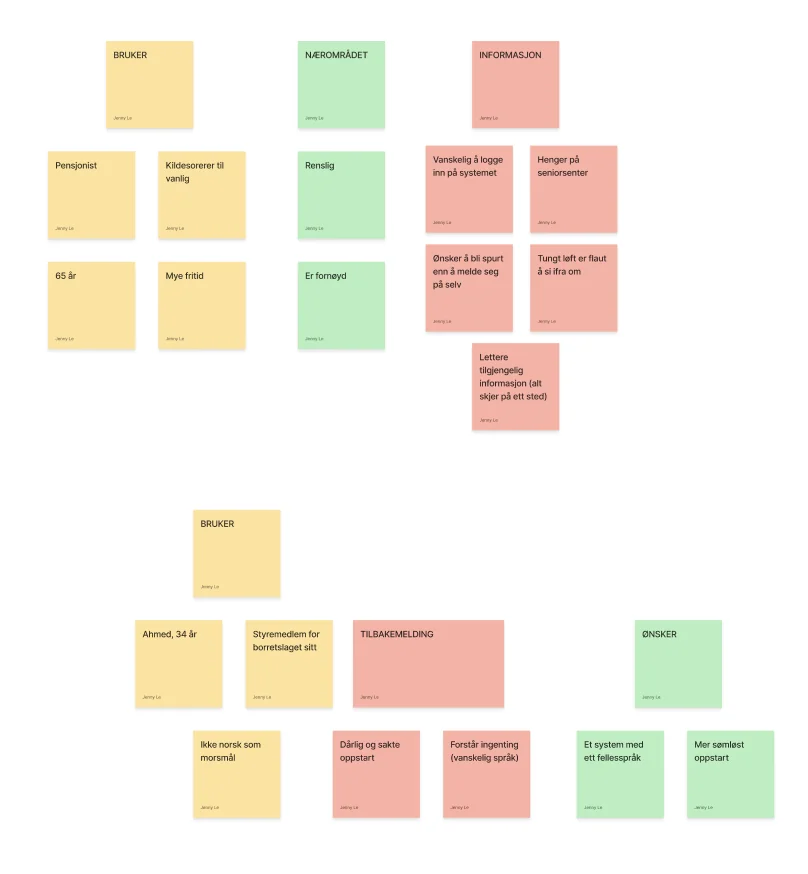
Innsikt
Et affinitetsdiagram rundt to brukere: en pensjonist på 65 og Ahmed, 34 år, som ikke har norsk som morsmål.
-
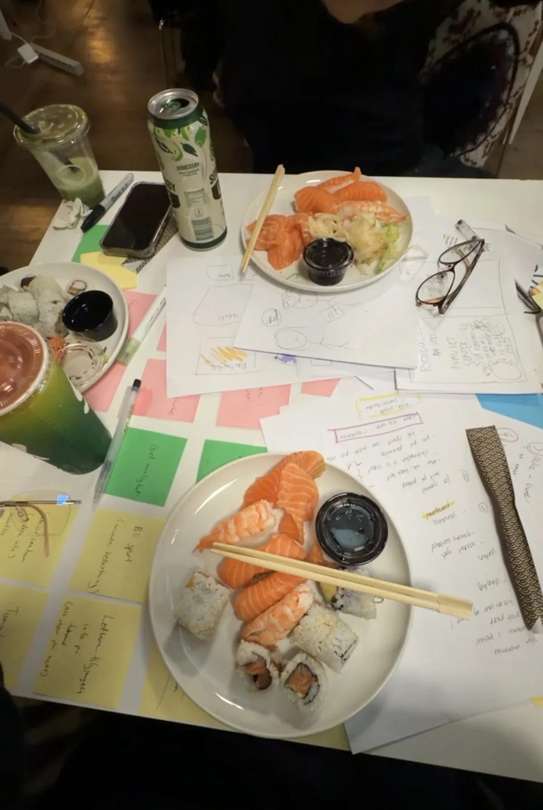
Konsept
Skisser og notater på papir under konkurransedagen: én app der aksjoner, påmelding og informasjon ligger samlet.
-
Wireframes
Etter konkurransen utvidet vi konseptet til hele appen: kart, gjenbruk, profil og innstillinger.
Fra innsikt til design
-
«Ønsker å bli spurt, enn å melde seg på selv»
Påmelding med ett SMS-svar
Busken inviterer deg på SMS. Svar «JA», så er du påmeldt, uten å logge inn.
-
«Tungt løft er flaut å si ifra om»
Si ifra uten å si ifra
Du oppgir i profilen om du vil løfte tungt, og aksjoner merkes med «OBS! Tungt løft».
-
«Alt skjer på ett sted» · «Et system med ett fellesspråk»
Alt samlet, enkelt språk
Hjemskjermen viser neste aksjon, oppmøtested og Lær mer-kort, med korte ord og tydelige ikoner.
Ferdig produkt
Wireframen dekker hele reisen: finne en aksjon på kartet, melde seg på, se resultatet etterpå og gi bort ting man ikke trenger. Profilen viser egen innsats med merker, og brukeren kan velge fargetema og varslinger selv.
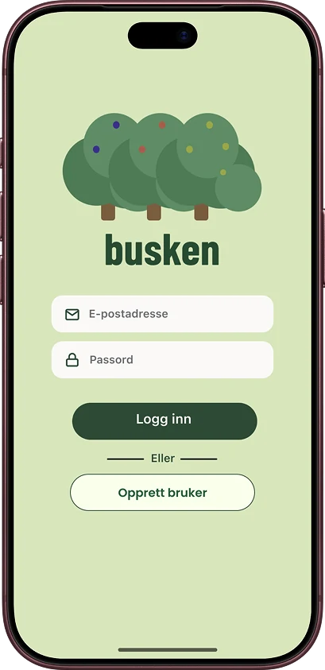
Logg inn- Hjem
- Kart
- Aksjon
- Utforsk
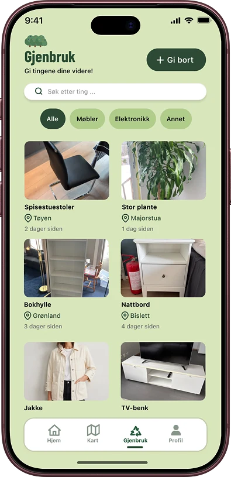
Gjenbruk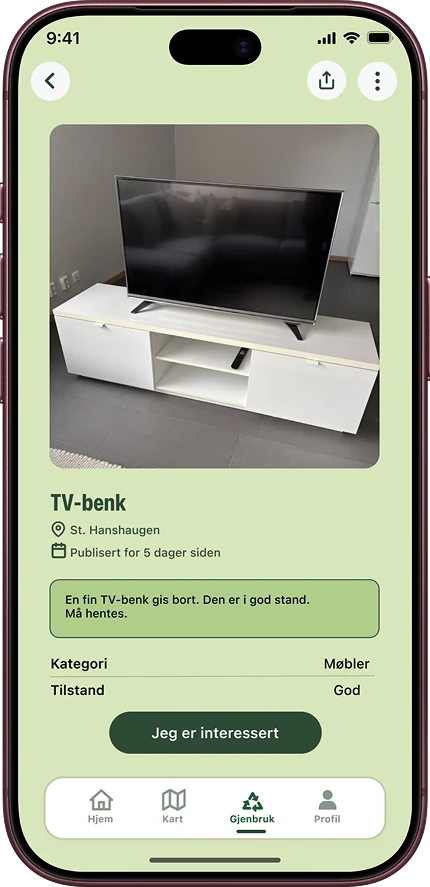
Gi bort- Profil
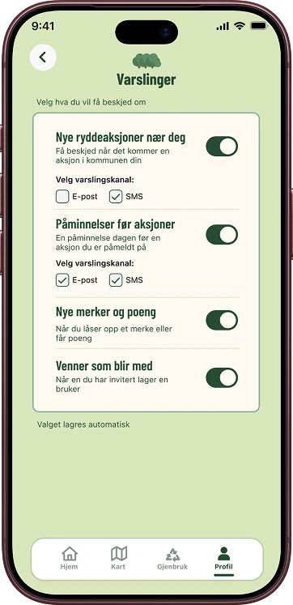
Varslinger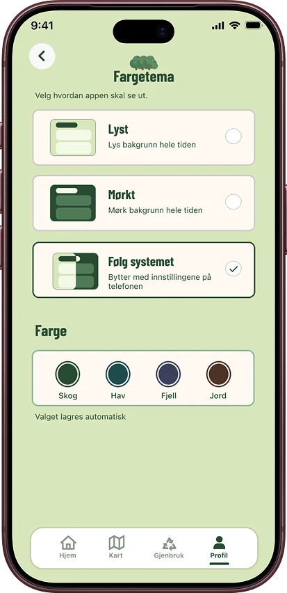
Fargetema
Resultat
5. plass i BEKK UX Cup, og et konsept vi ville bygge videre på.
Utfordringer
To svært ulike brukere
En pensjonist som synes innlogging er vanskelig, og en bruker som ikke har norsk som morsmål. Løsningen måtte fungere for begge uten å bli to apper.
Et konsept på én dag
I konkurransen måtte vi prioritere hardt. Mye av bredden i appen kom først da vi jobbet videre etterpå.
Læring
Små innsikter kan gi de beste designvalgene.
Et enkelt ønske som å «bli spurt» ble til påmelding på SMS. Jeg lærte å koble hver designbeslutning tilbake til et konkret funn, og å jobbe raskt og tett sammen i et lite team under tidspress.